QC and Preprocessing
01_Preprocessing
SarahL.
Apr 24 2024 15:06:03
Last updated: 2024-04-24
Checks: 7 0
Knit directory: RA_SingleCellAnalysis/
This reproducible R Markdown analysis was created with workflowr (version 1.7.1). The Checks tab describes the reproducibility checks that were applied when the results were created. The Past versions tab lists the development history.
Great! Since the R Markdown file has been committed to the Git repository, you know the exact version of the code that produced these results.
Great job! The global environment was empty. Objects defined in the global environment can affect the analysis in your R Markdown file in unknown ways. For reproduciblity it’s best to always run the code in an empty environment.
The command set.seed(20240328) was run prior to running
the code in the R Markdown file. Setting a seed ensures that any results
that rely on randomness, e.g. subsampling or permutations, are
reproducible.
Great job! Recording the operating system, R version, and package versions is critical for reproducibility.
Nice! There were no cached chunks for this analysis, so you can be confident that you successfully produced the results during this run.
Great job! Using relative paths to the files within your workflowr project makes it easier to run your code on other machines.
Great! You are using Git for version control. Tracking code development and connecting the code version to the results is critical for reproducibility.
The results in this page were generated with repository version 0e4e0b9. See the Past versions tab to see a history of the changes made to the R Markdown and HTML files.
Note that you need to be careful to ensure that all relevant files for
the analysis have been committed to Git prior to generating the results
(you can use wflow_publish or
wflow_git_commit). workflowr only checks the R Markdown
file, but you know if there are other scripts or data files that it
depends on. Below is the status of the Git repository when the results
were generated:
Ignored files:
Ignored: .Rhistory
Ignored: .Rproj.user/
Ignored: data/cellbender_data_h5/
Ignored: output/._Cluster_Marker_Genes.xlsx
Ignored: output/00_sce_DataPreparation.rds
Ignored: output/01_sce_Preprocessing.rds
Ignored: output/02_sce_DimensionalityReduction.rds
Ignored: output/03_sce_Integration_Batchelor.rds
Ignored: output/03_sce_Integration_Harmony.rds
Ignored: output/04_sce_Clustering.rds
Ignored: output/05_sce_CelltypeAnnotation.rds
Ignored: output/05_sce_CelltypeAnnotation.rdss
Ignored: output/Cluster_Marker_Genes.xlsx
Unstaged changes:
Modified: analysis/02_DimensionalityReduction.Rmd
Modified: analysis/03_Integration_Batchelor.Rmd
Modified: analysis/05_CelltypeAnnotation.Rmd
Modified: data/metadata/Metadata_Master.csv
Note that any generated files, e.g. HTML, png, CSS, etc., are not included in this status report because it is ok for generated content to have uncommitted changes.
These are the previous versions of the repository in which changes were
made to the R Markdown (analysis/01_Preprocessing.Rmd) and
HTML (docs/01_Preprocessing.html) files. If you’ve
configured a remote Git repository (see ?wflow_git_remote),
click on the hyperlinks in the table below to view the files as they
were in that past version.
| File | Version | Author | Date | Message |
|---|---|---|---|---|
| Rmd | 0e4e0b9 | sarloet | 2024-04-24 | Fix |
| html | 71a1878 | sarloet | 2024-04-24 | Build site. |
| Rmd | 3bbe965 | sarloet | 2024-04-24 | Informative commit message |
| html | a333b15 | sarloet | 2024-04-24 | Build site. |
| Rmd | 412c8f1 | sarloet | 2024-04-24 | Informative commit message |
| html | b9c2c67 | sarloet | 2024-04-24 | Build site. |
| Rmd | 6fe3080 | sarloet | 2024-04-24 | Informative commit message |
| html | 964233e | sarloet | 2024-04-24 | Build site. |
| Rmd | 4922145 | sarloet | 2024-04-24 | Informative commit message |
| Rmd | a4a9b77 | sarloet | 2024-04-23 | fix |
| html | 3c6891e | sarloet | 2024-04-23 | Build site. |
| Rmd | d228124 | sarloet | 2024-04-23 | Fix |
| Rmd | f73b2cd | sarloet | 2024-04-19 | fix |
| Rmd | c2c29ef | sarloet | 2024-04-19 | fix |
| Rmd | c889cbe | sarloet | 2024-04-11 | fix |
| Rmd | 64ae186 | sarloet | 2024-04-05 | fix |
| Rmd | e71997a | sarloet | 2024-04-05 | fix |
| html | 97de258 | sarloet | 2024-04-05 | Build site. |
| Rmd | 66debe9 | sarloet | 2024-04-05 | Add Prepocessing |
| Rmd | 8d92253 | sarloet | 2024-04-05 | fix |
| html | 7356a7d | sarloet | 2024-04-05 | Build site. |
| Rmd | ff33a79 | sarloet | 2024-04-05 | Add Prepocessing |
| Rmd | 1aac44e | sarloet | 2024-04-05 | Update 01_Preprocessing.Rmd |
| html | d57d5fc | sarloet | 2024-04-05 | Build site. |
| Rmd | db6843b | sarloet | 2024-04-05 | Add Prepocessing |
| Rmd | ebe7971 | sarloet | 2024-04-04 | Merge branch ‘master’ of https://github.com/sarloet/RA_SingleCellAnalysis |
| Rmd | 193eff2 | sarloet | 2024-04-04 | fix |
| Rmd | 5c258f5 | sarloet | 2024-04-04 | Update 01_Preprocessing.Rmd |
| Rmd | 1def092 | sarloet | 2024-04-04 | fix |
| Rmd | d41ba14 | sarloet | 2024-04-03 | fix |
| Rmd | 817f6bb | sarloet | 2024-04-03 | Update 01_Preprocessing.Rmd |
| Rmd | 960ebd0 | sarloet | 2024-04-03 | fix |
| Rmd | eb121be | sarloet | 2024-04-03 | fix |
| Rmd | 998977b | sarloet | 2024-04-02 | fix |
| Rmd | 78c7f8b | sarloet | 2024-04-02 | fix |
| Rmd | d291fd3 | sarloet | 2024-04-02 | initial commit |
Quality Control and Preprocessing
Setup
Standard packages
library(here)
source(here("code", "standard_libraries.R"))Additional Packages
#Load Packages
suppressPackageStartupMessages({
#library(DropletUtils)
library(scDblFinder)
library(sctransform)
})Set Parameter
set.seed(100)
bpp <- BiocParallel::MulticoreParam(parallel::detectCores()-1, RNGseed=100)
path <- here::here()Load Data
## Load the RA DATASET
sce <- readRDS(file = paste0(path,'/output/00_sce_DataPreparation.rds'))Explore Dataset Dimensions
#Dimensions of count matrix
dim(sce)[1] 36601 119652Histogramm with number of cells
Show the number of cells detected in each sample or joint location before filtering
Per Sample
#Histogramm with number of cells per sample
ggplot(colData(sce), aes(x=Sample)) +
geom_bar()+ coord_flip()+ ggtitle("Number of cells per sample") +
theme_bw() + stat_count(geom = "text", colour = "white", size = 3.5,aes(label = ..count..),position=position_stack(vjust=0.65))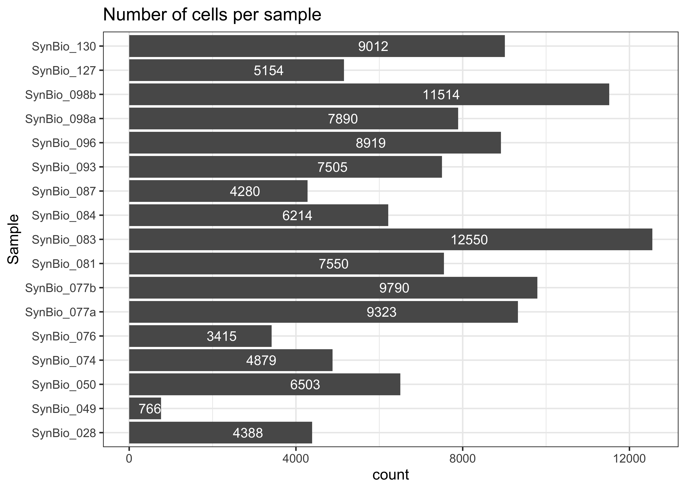
data.frame(as.list(table(colData(sce)$Sample)))Per Joint Location
#Histogramm with number of cells per sample
ggplot(colData(sce), aes(x=Joint.Location))+
geom_bar(stat = "count")+ coord_flip()+ ggtitle("Number of cells per sample") +
theme_bw() +stat_count(geom = "text", colour = "white", size = 3.5,aes(label = ..count..),position=position_stack(vjust=0.8))
data.frame(as.list(table(colData(sce)$Joint.Location)))Initial Filtering
Initial filtering to remove unexpressed genes and cells with very low number of counts. The input to scDblFinder should not include empty droplets, and it might be necessary to remove cells with a very low coverage (e.g. <200 reads) to avoid errors. Further quality filtering should be performed downstream of doublet detection.
#Initial filtering before droplet removal
dim_before_filtering <- dim(sce)
#Get only the detected Genes
#Remove Cells with very low expression of less than 200 genes expressed and cells with low count
sce <- sce[rowSums(counts(sce)> 0) > 0, colSums(counts(sce)> 0) > 200]
dim_after_filtering <- dim(sce)
cat("NR of Cells Before Initial Filtering ", dim_before_filtering[2],
"\nNR of Cells After Initial Filtering ", dim_after_filtering[2],
"\nNR of Cells Filtered out ", dim_before_filtering[2] - dim_after_filtering[2],
"\n\nNR of Genes Before Initial Filtering ", dim_before_filtering[1],
"\nNR of Genes After Initial Filtering ", dim_after_filtering[1],
"\nNR of Genes Filtered out ", dim_before_filtering[1] - dim_after_filtering[1]
)NR of Cells Before Initial Filtering 119652
NR of Cells After Initial Filtering 91083
NR of Cells Filtered out 28569
NR of Genes Before Initial Filtering 36601
NR of Genes After Initial Filtering 34594
NR of Genes Filtered out 2007Doublet Detection
Doublets are defined as two cells that are sequenced under the same cellular barcode, which happens if they were captured in the same droplet. The scDblFinder method combines the strengths of various doublet detection approaches, training an iterative classifier on the neighborhood of real cells and artificial doublets.
Detection
#Detection
sce <- scDblFinder::scDblFinder(sce, samples="Sample", BPPARAM = bpp)
table(sce$scDblFinder.class)
singlet doublet
82815 8268 as.data.frame.matrix(table(sce$Sample,sce$scDblFinder.class))Doublet Detection Plots
Singlet/Doublet Histogramm
Absolute comparison
#Plot singlet/doublet histogramm Absolute comparison / by sample
as.data.frame(colData(sce)) %>%
dplyr::group_by(Sample, scDblFinder.class) %>%
dplyr::summarise(Freq=n()) %>%
ggplot(aes(x=Sample, y=Freq, fill=scDblFinder.class,label=Freq)) +
geom_bar(stat="identity") +
labs(title="Doublet detection results",
subtitle="By sample",x="",y="Number of Cells") +
geom_text(size=3, position = position_stack(vjust=0.5))+
theme(axis.text.x = element_text(angle = 45,hjust=1), axis.line = element_line(colour = "black"), panel.background = element_rect(fill = NA))
Relative comparison
# Plot singlet/doublet histogramm Relative comparison / by sample
as.data.frame(colData(sce)) %>%
dplyr::group_by(Sample, scDblFinder.class) %>%
dplyr::summarise(Freq=n()) %>%
ggplot(aes(x=Sample, y=Freq, fill=scDblFinder.class, label=Freq)) +
geom_bar(stat="identity", position="fill") +
labs(title="Doublet detection results",
subtitle="By sample",
x="Sample",
y="Number of cells") +
geom_text(size=2.5, position = position_fill(vjust=0.5)) +
theme(axis.text.x = element_text(angle = 45,hjust=1), axis.line = element_line(colour = "black"), panel.background = element_rect(fill = NA)) 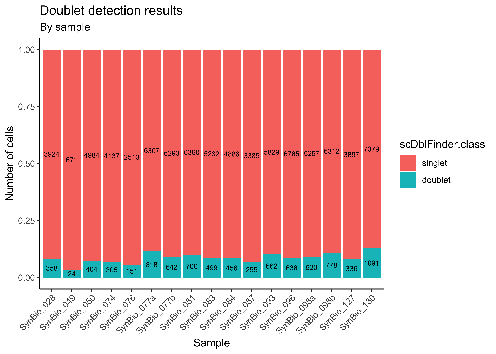
Singlet/Doublet Scatter
sce <- addPerCellQC(sce)
#Plot singlet/doublet qcplots
colData(sce) %>%
as.data.frame() %>%
arrange(scDblFinder.class) %>%
ggplot(aes(x = sce$sum, y = sce$detected )) +
geom_point(aes(colour = scDblFinder.class)) +
facet_wrap(vars(Sample))+
labs(title="Total number of detected genes plotted against total number of UMIs",
x="Total counts",
y="Detected genes") +
theme(strip.background=element_rect(fill="white"), panel.background = element_rect(fill = NA),axis.line = element_line(colour = "black"))
Apply Doublet Removal
#Apply Doublet Removal
print(paste0("NR of Cells Before Doublet Removal ", dim(sce)[2]))[1] "NR of Cells Before Doublet Removal 91083"sce <- sce[ ,sce$scDblFinder.class == "singlet"]
print(paste0("NR of Cells Before Doublet Removal ", dim(sce)[2]))[1] "NR of Cells Before Doublet Removal 82815"Filter Cells
The main goal of quality control is to remove low-quality reads from the dataset. When a cell has a low number of detected genes, a low count depth and a high fraction of mitochondrial counts it might have a broken membrane which can indicate a dying cell.
We filter for: - Low number of counts per barcode (count depth) - Low number number of genes per barcode - High fraction of counts from mitochondrial genes per barcode
# Indentify mitochondrial genes
is_mito<- grepl("(^MT-)|(^mt-)", rowData(sce)$Symbol)
rowData(sce)$Symbol[is_mito] #Show the MT genes [1] "MT-ND1" "MT-ND2" "MT-CO1" "MT-CO2" "MT-ATP8" "MT-ATP6" "MT-CO3"
[8] "MT-ND3" "MT-ND4L" "MT-ND4" "MT-ND5" "MT-ND6" "MT-CYB" # calculate per-cell quality control (QC) metrics using scater
sce <- addPerCellQC(sce, subsets=list(Mito=is_mito))Fixed Filtering Thresholds
#Some Fixed thresholds
colData(sce)$qc.count_manual <- sce$sum < 300 | sce$sum > 75000# Cells have at least a count of 1000
colData(sce)$qc.genexp_manual <- sce$detected < 200 # Cells have at least 200 genes expressed
colData(sce)$qc.mito_manual <- sce$subsets_Mito_percent > 15 #Mitochondrial contamination has to be lower than 15%#Some Fixed thresholds
hist(sce$total,breaks = 100,main ="UMI distribution",xlab ="UMI")
abline(v = 500, col = "red")
abline(v = 75000, col = "red")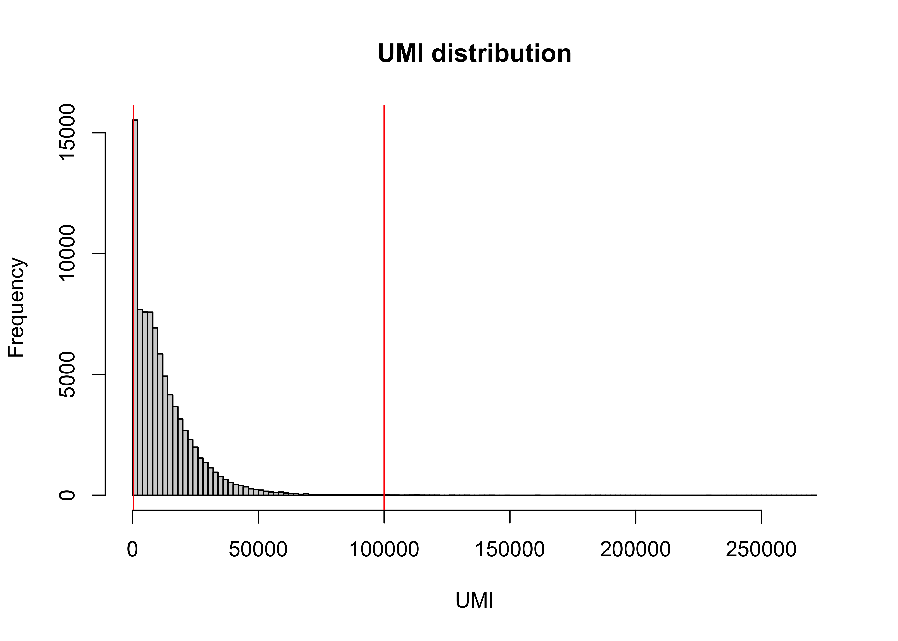
#Some Fixed thresholds
hist(sce$detected,breaks = 100, main ="Detected gene distribution",xlab ="Detected")
abline(v = 300, col = "red")
| Version | Author | Date |
|---|---|---|
| 3c6891e | sarloet | 2024-04-23 |
Adaptive Filtering Thresholds (for each batch/sample)
# Detect cells with very low number of counts
colData(sce)$qc.count <- isOutlier(sce$sum,nmads=3, log=TRUE, type="lower",batch =sce$Sample )
data.frame(attr(colData(sce)$qc.count, "thresholds")) # Detect cells with very low number of genes
colData(sce)$qc.genexp <- isOutlier(sce$detected,nmads=3, log=TRUE, type="lower",batch =sce$Sample)
data.frame(attr(colData(sce)$qc.genexp, "thresholds"))# Detect cells with high mitochondrial content
colData(sce)$qc.mito <- isOutlier(sce$subsets_Mito_percent,nmads=3, type="higher",batch =sce$Sample)
data.frame(attr(colData(sce)$qc.mito, "thresholds")) # Mark all Cells to be Discarted
colData(sce)$discard <- sce$qc.count | sce$qc.count_manual | sce$qc.genexp | sce$qc.genexp_manual | sce$qc.mito | sce$qc.mito_manual# Summary of all discarted cells
data.frame(`Library_size` = sum(sce$qc.count | sce$qc.count_manual),
`Genes_detected` = sum(sce$qc.genexp| sce$qc.genexp_manual),
`Mitochondrial_percentage` = sum(sce$qc.mito| sce$qc.mito_manual),
Total_discarded = sum(sce$discard))QC Filtering Plots
The aim by plotting the proportion of mitochondrial counts against some of the other QC metrics is to confirm that there are no cells with both large total counts and large mitochondrial counts, to ensure that we are not inadvertently removing high-quality cells that happen to be highly metabolically active (e.g., hepatocytes).
Scatter Plots Per Sample
Detected genes vs total number of UMIs
colData(sce) %>%
as.data.frame() %>%
arrange(discard) %>%
ggplot(aes(x = sum, y = detected)) +
geom_point(aes(colour = discard)) +
facet_wrap(vars(Sample))+
labs(title="Total number of detected genes plotted against total number of UMIs",
x="Total counts",
y="Detected genes") +
ggtitle("Total number of detected genes plotted against total number of UMIs") +
theme(strip.background=element_rect(fill="white"), panel.background = element_rect(fill = NA),axis.line = element_line(colour = "black")) 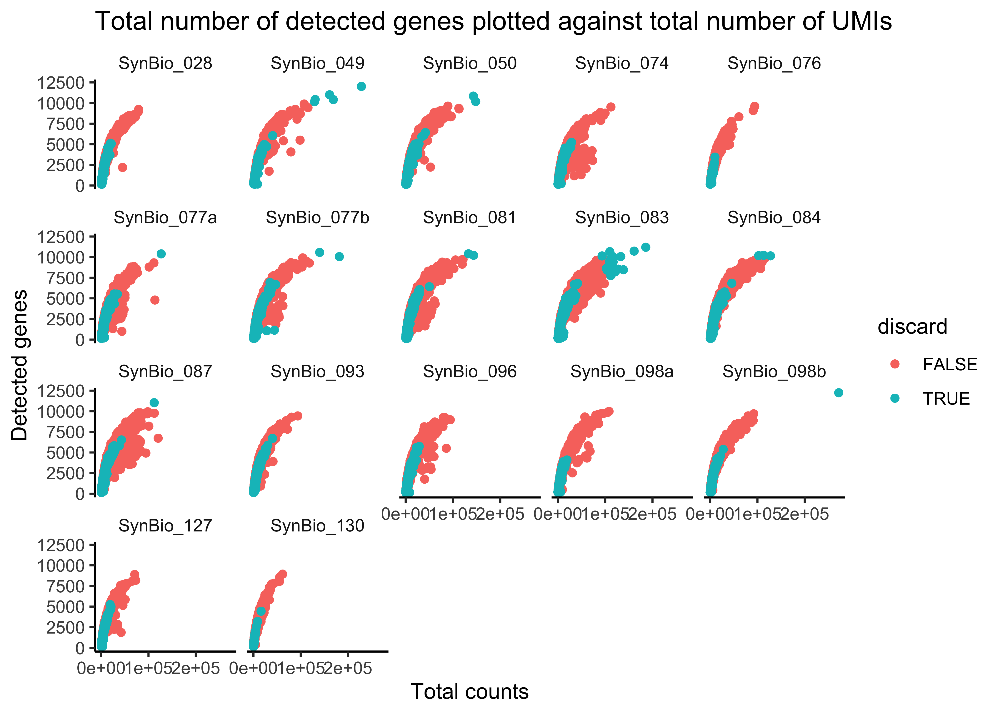
Mitochondrial percentage vs total number of UMIs
colData(sce) %>%
as.data.frame() %>%
arrange(discard) %>%
ggplot(aes(x = sum, y = subsets_Mito_percent)) +
geom_point(aes(colour = discard)) +
facet_wrap(vars(Sample)) +
labs(title="Percentage of mitochondrial UMIs plotted against total number of UMIs",
x="Total counts",
y="Mitochondrial UMIs [%]") +
theme(strip.background=element_rect(fill="white"), panel.background = element_rect(fill = NA),axis.line = element_line(colour = "black")) 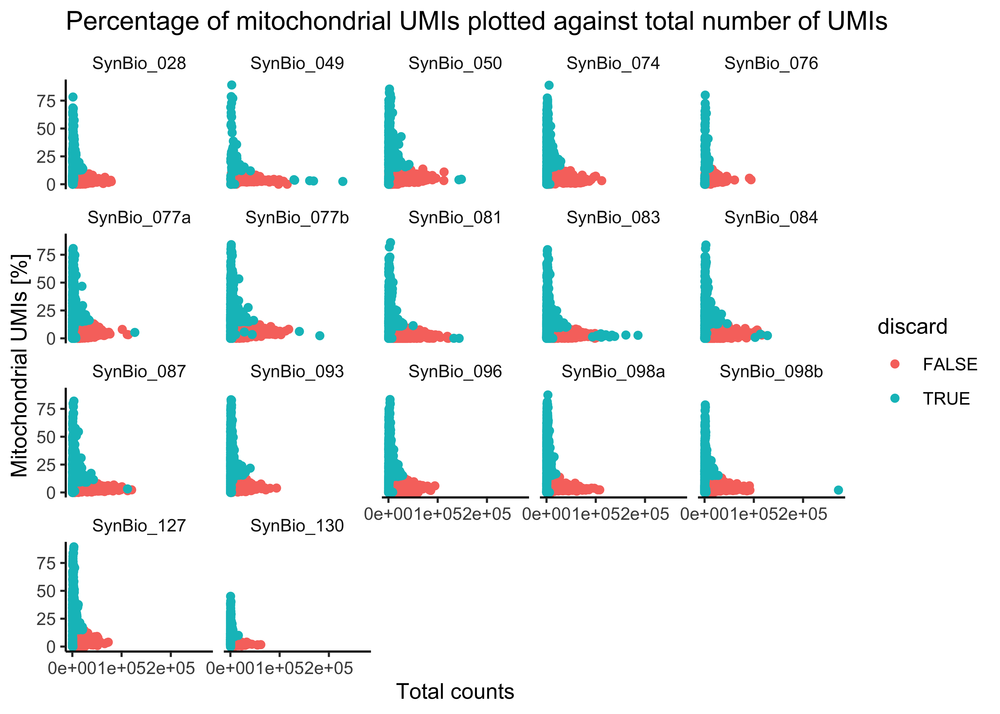
Violin Plots Per Sample
Total counts
#Plot Total count
plotColData(sce, x="Sample", y="sum",other_fields="Sample",colour_by = data.frame(factor(sce$qc.count | sce$qc.count_manual,levels=c(FALSE,TRUE)))) +
facet_wrap(~Sample, nrow=1, scales = "free_x") +
scale_y_log10() +
ggtitle("Total count")+
guides(colour=guide_legend(title="Discarded"))+
theme(axis.text.x = element_text(angle = 45,hjust=1), axis.ticks.x=element_blank(),strip.text.x = element_blank())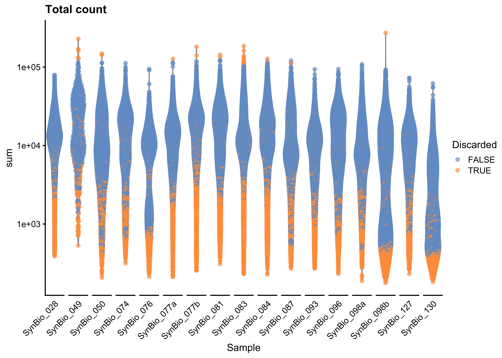
Genes detected
#Plot Detected Genes
plotColData(sce, x="Sample", y="detected", other_fields="Sample",colour_by = data.frame(factor(sce$qc.genexp | sce$qc.genexp_manual,levels=c(FALSE,TRUE))))+
facet_wrap(~Sample, nrow=1, scales = "free_x") +
scale_y_log10() +
ggtitle("Detected features")+
guides(colour=guide_legend(title="Discarded"))+
theme(axis.text.x = element_text(angle = 45,hjust=1), axis.ticks.x=element_blank(),strip.text.x = element_blank())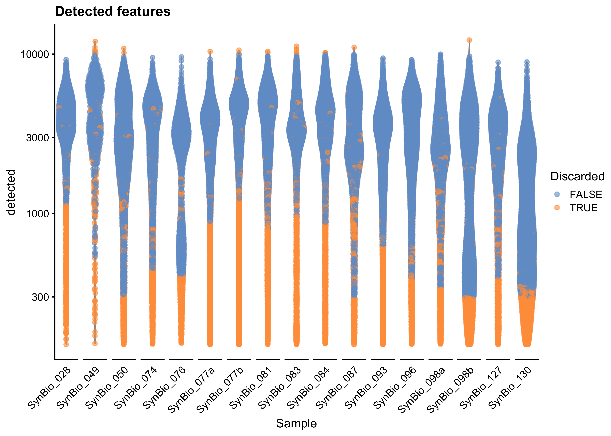
Mitochondrial percentage
#Plot Mito percent
plotColData(sce, x="Sample", y="subsets_Mito_percent", other_fields="Sample",colour_by = data.frame(factor(sce$qc.mito | sce$qc.mito_manual,levels=c(FALSE,TRUE)))) +
facet_wrap(~Sample, nrow=1, scales = "free_x") +
ggtitle("Mito percent")+
guides(colour=guide_legend(title="Discarded"))+
theme(axis.text.x = element_text(angle = 45,hjust=1,), axis.ticks.x=element_blank(),strip.text.x = element_blank())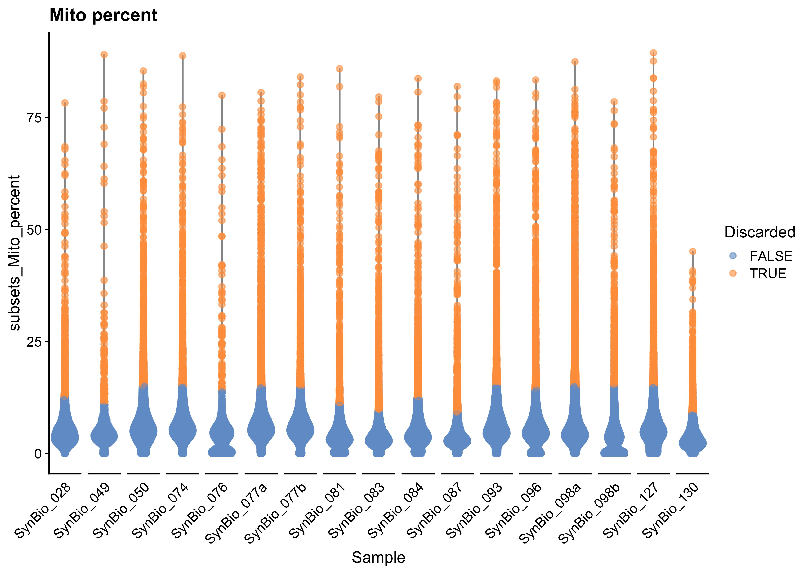
Cells to be Removed Histogramm
Absolute comparison
#Cells marked to be dropped per samples
# Absolute comparison / by sample
as.data.frame(colData(sce)) %>%
group_by(Sample, discard) %>%
summarise(Freq=n()) %>%
ggplot(aes(x=Sample, y=Freq, fill=discard, label=Freq)) +
geom_bar(stat="identity", position="stack") +
labs(title="Cells to be dropped",
subtitle="Labels represent absolute number of cells",
x="",
y="Number of cells") +
geom_text(size=3, position = position_stack(vjust=0.5))+
theme(axis.text.x = element_text(angle = 45,hjust=1), axis.line = element_line(colour = "black"), panel.background = element_rect(fill = NA)) 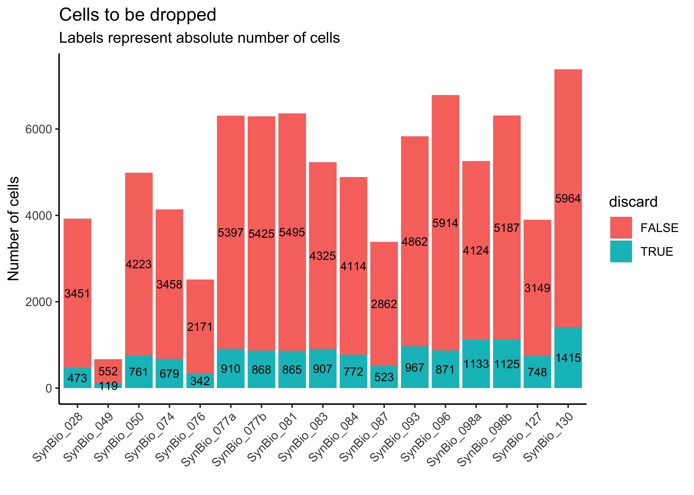
Relative comparison
#Cells marked to be dropped per samples
# Relative comparison / by sample
as.data.frame(colData(sce)) %>%
group_by(Sample, discard) %>%
summarise(Freq=n()) %>%
ggplot(aes(x=Sample, y=Freq, fill=discard, label=Freq)) +
geom_bar(stat="identity", position="fill") +
labs(title="Cells to be dropped",
subtitle="Labels represent absolute number of cells",
x="",
y="Number of cells") +
geom_text(size=3, position = position_fill(vjust=0.5))+
theme(axis.text.x = element_text(angle = 45,hjust=1), axis.line = element_line(colour = "black"), panel.background = element_rect(fill = NA))
Apply filtering
# Create the filtered sce element
sce.filtered <- sce[, !colData(sce)$discard]Filter Genes
Additionally, perform some filtering by prevalence. If a gene is only expressed in a handful of cells, it is not particularly meaningful as it still brings down the averages for all other cells it is not expressed in. For this dataset we choose to keep only genes which are expressed in 10 or more cells. This should be performed after filtering out for low quality cells.
#Filter out genes
dim_before_filtering <- dim(sce.filtered)
#Get only the detected Genes
detected_genes <- rowSums(counts(sce.filtered)> 0)
#Remove Genes not expressed in at least 10 Cells
sce.filtered <- sce.filtered[detected_genes > 10,]
dim_after_filtering <- dim(sce.filtered)
cat(
"NR of Genes Before Filtering ", dim_before_filtering[1],
"\nNR of Genes After Filtering ", dim_after_filtering[1],
"\nNR of Genes Filtered out ", dim_before_filtering[1] - dim_after_filtering[1]
)NR of Genes Before Filtering 34594
NR of Genes After Filtering 30538
NR of Genes Filtered out 4056Plots after Filtering
Histogramm with number of cells
Show the number of cells detected in each sample or joint location after filtering
Per Sample
#Histogramm with number of cells per sample after filtering
ggplot(as.data.frame(colData(sce.filtered)), aes(x=Sample))+geom_bar()+ coord_flip()+ ggtitle("Number of cells per sample") +
theme_bw() + stat_count(geom = "text", colour = "white", size = 3.5,aes(label = ..count..),position=position_stack(vjust=0.65))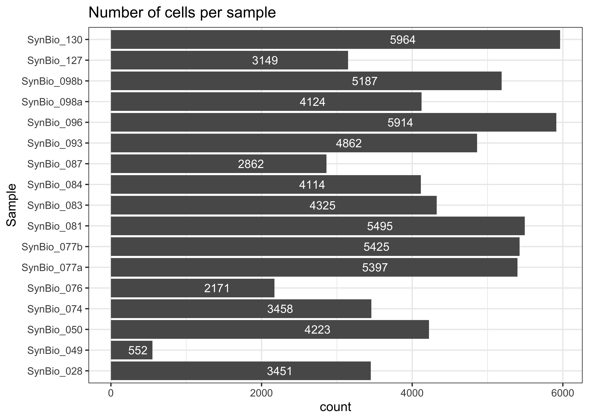
data.frame(as.list(table(colData(sce.filtered)$Sample)))Per Joint Location
#Histogramm with number of cells per sample after filtering
ggplot(as.data.frame(colData(sce.filtered)), aes(x=Joint.Location))+geom_bar()+ coord_flip()+ggtitle("Number of cells per Joint") +
theme_bw() + stat_count(geom = "text", colour = "white", size = 3.5,aes(label = ..count..),position=position_stack(vjust=0.8))
data.frame(as.list(table(colData(sce.filtered)$Joint.Location)))Plot top 25 genes in the dataset
The most strongly and commonly expressed genes expected among all cells are ribosomal and mitochondrial.
#Check top 20 expressed genes after filtering
rel_expression <- t( t(counts(sce.filtered)) / colSums(counts(sce.filtered))) * 100
rownames(rel_expression) <- rowData(sce.filtered)$Symbol
most_expressed <- sort(rowSums( rel_expression ),T)[20:1]
plot_data <- as.matrix(t(rel_expression[names(most_expressed),]))
par(cex.lab=0.75)
boxplot(plot_data, cex=0.1, las=1, xlab="% total count per cell", horizontal=TRUE, main="Distribution of counts for the top 20 genes before filtering")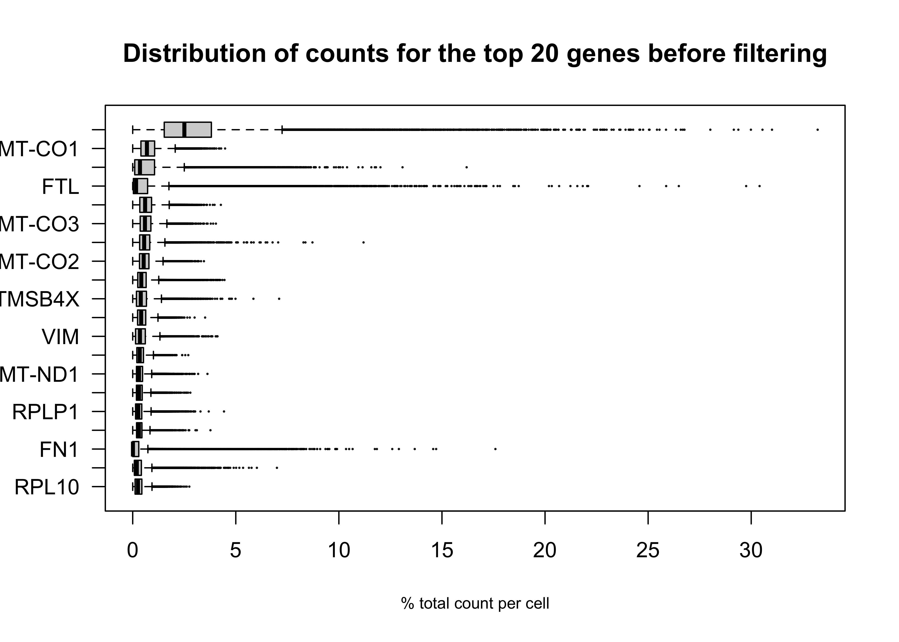
rm(plot_data,rel_expression)
gc() used (Mb) gc trigger (Mb) limit (Mb) max used (Mb)
Ncells 10987666 586.9 17697757 945.2 NA 17697757 945.2
Vcells 777610523 5932.7 1977155778 15084.6 16384 1976314187 15078.1Normalization
The preprocessing step of normalization aims to adjust the raw counts in the dataset for variable sampling effects by scaling the observable variance to a specified range. Several normalization techniques are used in practice varying in complexity.
Normalization by Library size
Library size normalization is the simplest strategy for performing scaling normalization. The library size is defined as the total sum of counts across all genes for each cell, the expected value of which is assumed to scale with any cell-specific biases. The “library size factor” for each cell is then directly proportional to its library size where the proportionality constant is defined such that the mean size factor across all cells is equal to 1.
# Library size normalization
sce.lib <- computeLibraryFactors(sce.filtered)
ggplot(data.frame("log10libSf"=log10(sizeFactors(sce.lib))), aes(x=log10libSf)) +
xlab("Log10 Library size factor") +
geom_histogram(bins=50)+
ggtitle("Distribution of Library size factors")+
theme_bw()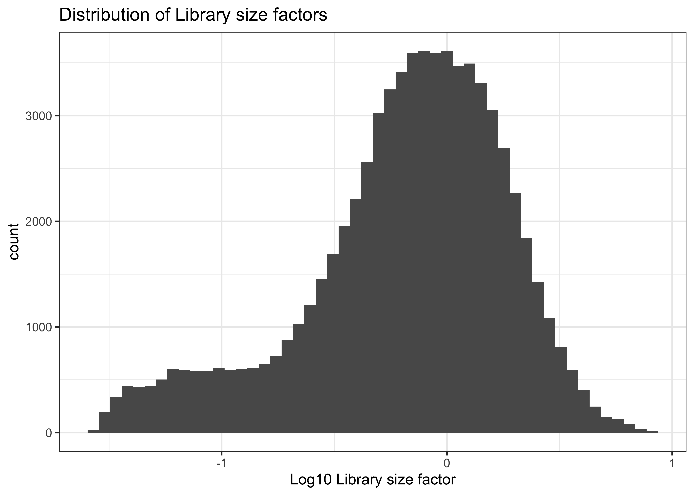
Normalization by Deconvolution
Deconvolution aims to normalize expression values based on summed values from pools of cells which reduces composition biases that are present when any unbalanced differential expression exists between samples. Pooling counts from many cells to increase the size of the counts for accurate size factor estimation. Pool-based size factors are then “deconvolved” into cell-based factors for normalization of each cell’s expression profile.
# Normalization by deconvolution
clust.filtered <- quickCluster(sce.filtered, BPPARAM =bpp)
sce.deconv <- computeSumFactors(sce.filtered,clusters=clust.filtered, min.mean = 0.1, BPPARAM =bpp)
ggplot(data.frame("log10libSf"=log10(sizeFactors(sce.deconv))), aes(x=log10libSf)) +
xlab("Log10 Library size factor") +
geom_histogram(bins=50)+
ggtitle("Distribution of Deconvolution size factors")+
theme_bw()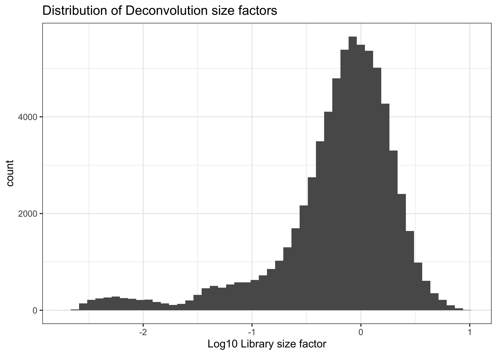
print("Library size factors")[1] "Library size factors"summary(sizeFactors(sce.lib)) Min. 1st Qu. Median Mean 3rd Qu. Max.
0.02164 0.38915 0.77206 1.00000 1.38153 5.40824 print("Deconvolution size factors")[1] "Deconvolution size factors"summary(sizeFactors(sce.deconv)) Min. 1st Qu. Median Mean 3rd Qu. Max.
0.001115 0.388895 0.782817 1.000000 1.373016 7.135725 Plot Deconvolution against Dibrary Size Factors
Deconvolution size factor for each cell in the dataset, compared to the equivalent size factor derived from the library size. The red line corresponds to identity between the two size factors. Check that the estimated library sizes are not too far from the library size factors, estimated from the total number of counts.
Color by Individual Cluster
#Color by individual cluster
data.frame(LibrarySizeFactors = unname(sizeFactors(sce.lib)), DeconvolutionSizeFactors = sizeFactors(sce.deconv),Cluster = as.integer(clust.filtered)) %>%
ggplot(aes(x=LibrarySizeFactors, y=DeconvolutionSizeFactors)) +
geom_point(aes(col=factor(Cluster))) +
geom_abline(slope = 1, intercept = 0) + theme_classic() + theme(legend.key.size = unit(0.5, 'cm'))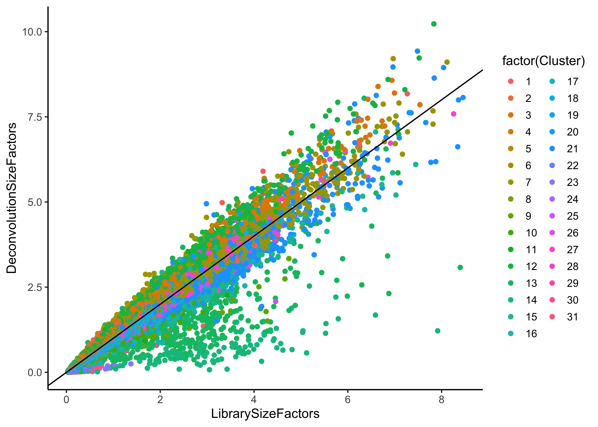
Color by Sample
#Color by sample
data.frame(LibrarySizeFactors = unname(sizeFactors(sce.lib)), DeconvolutionSizeFactors = sizeFactors(sce.deconv),Sample = sce.filtered$Sample) %>%
ggplot(aes(x=LibrarySizeFactors, y=DeconvolutionSizeFactors)) +
geom_point(aes(col=Sample)) +
geom_abline(slope = 1, intercept = 0) + theme_classic() + theme(legend.key.size = unit(0.5, 'cm'))
Apply Normalization
Apply the chosen normalization method
# Apply Normalisation
sce.filtered <- logNormCounts(sce.deconv)
summary(sizeFactors(sce.filtered)) Min. 1st Qu. Median Mean 3rd Qu. Max.
0.001115 0.388895 0.782817 1.000000 1.373016 7.135725 assayNames(sce.filtered)[1] "counts" "logcounts"rm(sce.lib, sce.deconv)
gc() used (Mb) gc trigger (Mb) limit (Mb) max used (Mb)
Ncells 11031765 589.2 17697757 945.2 NA 17697757 945.2
Vcells 1012516789 7724.9 1977155778 15084.6 16384 1976314187 15078.1Variable-Level Metrics
Variable-level metrics are computed by the getVarianceExplained() function. This calculates the percentage of variance of each gene’s expression that is explained by each variable in the colData of the SingleCellExperiment object. We can then use this to determine which experimental factors are contributing most to the variance in expression. This is useful for diagnosing batch effects or to quickly verify that a treatment has an effect.
vars <- getVarianceExplained(sce.filtered,assay.type="logcounts",
variables=c("Sample", "Joint.Location", "Pathotype","Seropositivity","GCTreatment","Protocol","Sex","Age"))
data.frame(head(vars))plotExplanatoryVariables(vars)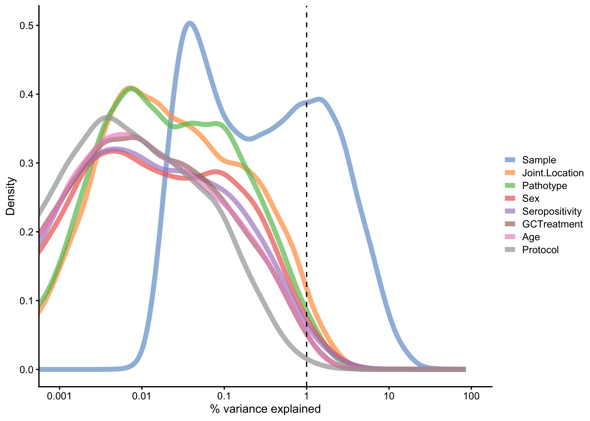
Save Dataset
saveRDS(sce.filtered, file =paste0(path,'/output/01_sce_Preprocessing.rds'))
sessionInfo()R version 4.3.3 (2024-02-29)
Platform: x86_64-apple-darwin20 (64-bit)
Running under: macOS Sonoma 14.4.1
Matrix products: default
BLAS: /Library/Frameworks/R.framework/Versions/4.3-x86_64/Resources/lib/libRblas.0.dylib
LAPACK: /Library/Frameworks/R.framework/Versions/4.3-x86_64/Resources/lib/libRlapack.dylib; LAPACK version 3.11.0
locale:
[1] en_US.UTF-8/en_US.UTF-8/en_US.UTF-8/C/en_US.UTF-8/en_US.UTF-8
time zone: Europe/Warsaw
tzcode source: internal
attached base packages:
[1] stats4 stats graphics grDevices utils datasets methods
[8] base
other attached packages:
[1] HDF5Array_1.30.1 rhdf5_2.46.1
[3] DelayedArray_0.28.0 SparseArray_1.2.4
[5] S4Arrays_1.2.1 abind_1.4-5
[7] Matrix_1.6-5 sctransform_0.4.1
[9] scDblFinder_1.16.0 gridExtra_2.3
[11] scran_1.30.2 scater_1.30.1
[13] scuttle_1.12.0 SingleCellExperiment_1.24.0
[15] SummarizedExperiment_1.32.0 Biobase_2.62.0
[17] GenomicRanges_1.54.1 GenomeInfoDb_1.38.8
[19] IRanges_2.36.0 S4Vectors_0.40.2
[21] BiocGenerics_0.48.1 MatrixGenerics_1.14.0
[23] matrixStats_1.3.0 dplyr_1.1.4
[25] ggplot2_3.5.0 BiocParallel_1.36.0
[27] here_1.0.1 workflowr_1.7.1
loaded via a namespace (and not attached):
[1] rstudioapi_0.16.0 jsonlite_1.8.8
[3] magrittr_2.0.3 ggbeeswarm_0.7.2
[5] farver_2.1.1 rmarkdown_2.26
[7] fs_1.6.3 BiocIO_1.12.0
[9] zlibbioc_1.48.2 vctrs_0.6.5
[11] Rsamtools_2.18.0 DelayedMatrixStats_1.24.0
[13] RCurl_1.98-1.14 htmltools_0.5.8.1
[15] BiocNeighbors_1.20.2 Rhdf5lib_1.24.2
[17] xgboost_1.7.7.1 sass_0.4.9
[19] parallelly_1.37.1 bslib_0.7.0
[21] plyr_1.8.9 cachem_1.0.8
[23] GenomicAlignments_1.38.2 whisker_0.4.1
[25] igraph_2.0.3 lifecycle_1.0.4
[27] pkgconfig_2.0.3 rsvd_1.0.5
[29] R6_2.5.1 fastmap_1.1.1
[31] GenomeInfoDbData_1.2.11 future_1.33.2
[33] digest_0.6.35 colorspace_2.1-0
[35] ps_1.7.6 rprojroot_2.0.4
[37] dqrng_0.3.2 irlba_2.3.5.1
[39] beachmat_2.18.1 labeling_0.4.3
[41] fansi_1.0.6 httr_1.4.7
[43] compiler_4.3.3 withr_3.0.0
[45] viridis_0.6.5 highr_0.10
[47] MASS_7.3-60.0.1 rjson_0.2.21
[49] bluster_1.12.0 tools_4.3.3
[51] vipor_0.4.7 beeswarm_0.4.0
[53] httpuv_1.6.15 future.apply_1.11.2
[55] glue_1.7.0 restfulr_0.0.15
[57] callr_3.7.6 rhdf5filters_1.14.1
[59] promises_1.3.0 grid_4.3.3
[61] getPass_0.2-4 cluster_2.1.6
[63] reshape2_1.4.4 generics_0.1.3
[65] gtable_0.3.4 data.table_1.15.4
[67] BiocSingular_1.18.0 ScaledMatrix_1.10.0
[69] metapod_1.10.1 utf8_1.2.4
[71] XVector_0.42.0 ggrepel_0.9.5
[73] pillar_1.9.0 stringr_1.5.1
[75] limma_3.58.1 later_1.3.2
[77] lattice_0.22-5 rtracklayer_1.62.0
[79] tidyselect_1.2.1 locfit_1.5-9.9
[81] Biostrings_2.70.3 knitr_1.45
[83] git2r_0.33.0 edgeR_4.0.16
[85] xfun_0.43 statmod_1.5.0
[87] stringi_1.8.3 yaml_2.3.8
[89] evaluate_0.23 codetools_0.2-19
[91] tibble_3.2.1 cli_3.6.2
[93] munsell_0.5.1 processx_3.8.4
[95] jquerylib_0.1.4 Rcpp_1.0.12
[97] globals_0.16.3 XML_3.99-0.16.1
[99] parallel_4.3.3 sparseMatrixStats_1.14.0
[101] bitops_1.0-7 listenv_0.9.1
[103] viridisLite_0.4.2 scales_1.3.0
[105] crayon_1.5.2 rlang_1.1.3
[107] cowplot_1.1.3